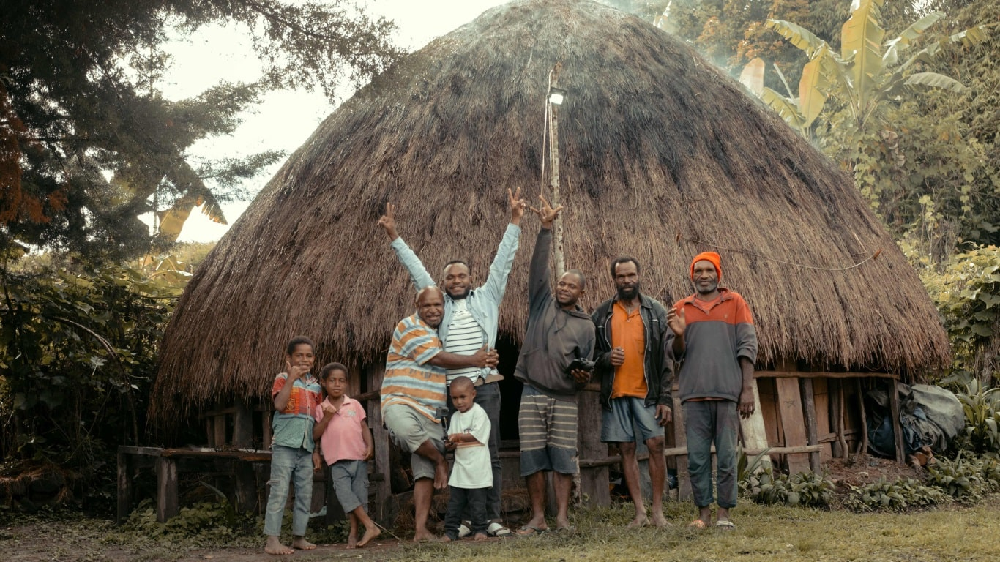
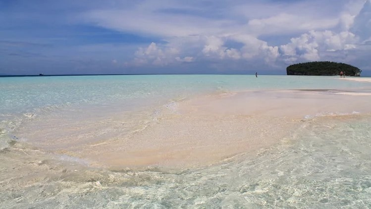
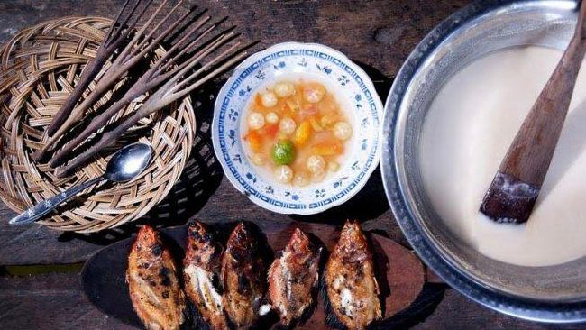

Semua
Destinasi
Tips
Seni & Budaya

Destinasi
Kepulauan Raja AmpatKepulauan Raja Ampat, dikenal sebagai salah satu surga tersembunyi di timur Indonesia, memikat hati para petualang dengan...
Destinasi
Teluk CenderawasihTeluk Cenderawasih bukan hanya sekedar destinasi wisata alam, tetapi juga merupakan laboratorium alam yang memikat para...

Tips
Memilih Waktu ke Papua BaratKetika merencanakan perjalanan ke destinasi tropis seperti Raja Ampat, memahami kondisi musim dan cuaca adalah kunci penting...

Seni & Budaya
Seni Budaya Papua BaratKekayaan tak terungkap dari seni dan budaya Papua Barat! Jauh dari sekadar menjadi destinasi wisata yang indah, Papua Barat...

Tips
Spot Scuba DivingJika Anda memiliki minat dalam scuba diving, destinasi yang tak terbantahkan adalah Raja Ampat. Terletak di provinsi Papua Barat...

Seni & Budaya
Rumah HonaiHonai merupakan rumah tradisional bagi masyarakat Papua. Secara morfologis, honai dibentuk dari dua kata. Pertama yaitu...

Destinasi
Pantai di Tengah LautDari kejauhan, pantai ini terlihat seperti pulau pasir kecil yang muncul di tengah lautan, memberikan ilusi tentang kehidupan...

Seni & Budaya
Kuliner Khas Papua BaratDi balik keindahan alamnya yang memukau, Papua Barat juga menyimpan rahasia kuliner yang tak kalah memikat. Dari hutan bel...